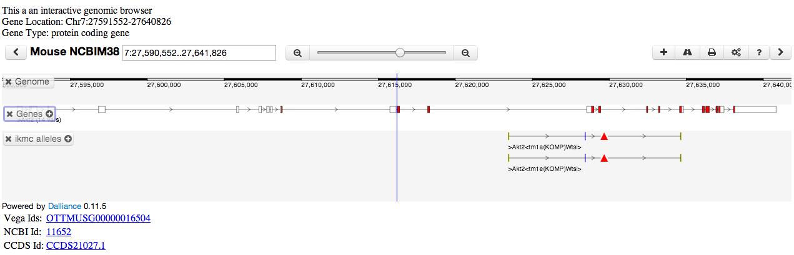
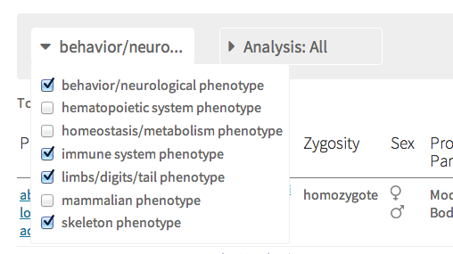
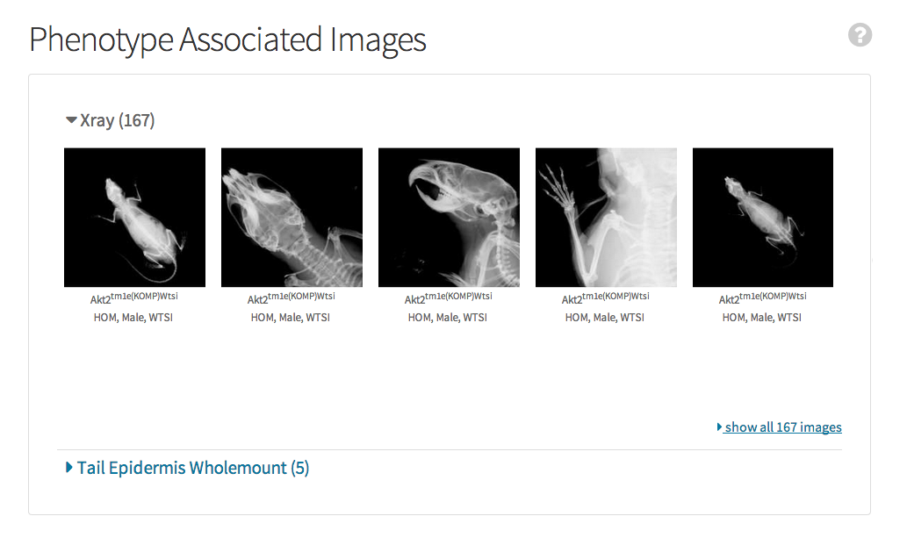

Quick help links
Gene details page
Gene details
The gene details section of the page shows information about the marker. The information displayed includes
- Name
- Synonyms
- MGI ID with a link to the corresponding page at Mouse Genome Informatics
- The latest IMPC production status for this gene. This checks all ongoing projects for this gene in iMits and displays the status of the project that is closest to producing a mouse.
- Links to different view of the gene in the Ensembl genome browser: Gene view links to the browser centered on the gene, Location view links to a view of the chromosome, Compara view links to the Ensembl compara view for this gene
- ENU link to the ENU mutant library at the Australian Phenomics Facility
Gene browser and more information
By clicking the Show More Gene Information link, a browser will be shown displaying a quick view of the gene's location graphically. The browser is interactive and you can zoom and scroll to see nearby features.
This section also shows all Vega, NCBI, or cCDS IDs associated with this gene.
Gene phenotypes
The gene phenotypes section shows the associations of genes to Mammalian phenotype terms

Gene phenotype summary
A summary of phenotype terms for this gene with associated counts. The counts indicate the number of unique combinations of:
- Phenotype term
- Allele
- Zygosity
- Sex
Due to this combining process, the number of rows in the results table may not equal the count shown. Also, be aware that MP terms may have more than one high level parent and so the counts in the summary may not equal the total number of entries.

Gene phenotype table
The phenotype table lists the individual phenotypes associated to this gene through a specific allele. If both sexes are associated, then both are shown on the same row indicated by the male ( ) / female (
) / female ( ) icons.
) icons.
Gene phenotype filtering
The results shown in the phenotype table may be filtered using the dropdown filters. Select the check boxes to include entries pertaining to the selection. The displayed rows are the result of logically ORing within and logically ANDing between dropdowns.

Gene phenotype download
The results in the table may be downloaded for further processing. The resulting download respects all filters that have been applied to the data.
We offer 2 export options for the data in the table:
- TSV, text file with tab separated variables (
 )
) - XLS, Microsoft Excel spread sheet (
 )
)
Please note that in the table displayed on our page entry lines are collapsed based on sex. That is, if for 2 lines all fields are identical except the gender, they will be shown together for a better user experience. In the export file however we export all lines separately, to allow easier further processing of the data. This holds for both XLS and TSV files.
Gene phenotype images
The phenotype images section shows all the images associated to this gene via direct annotation from the image source
Gene expression images

Gene ES cells & alleles
The alleles and ES cells section describes the mutations available from the IKMC resource. Each row corresponds to an allele of this gene. A diagram is included depicting the mutation the allele carries and a link to where the ES cell or mouse may be purchased when available. The genbank file link points to a genbank file describing the genomic sequence of the allele.